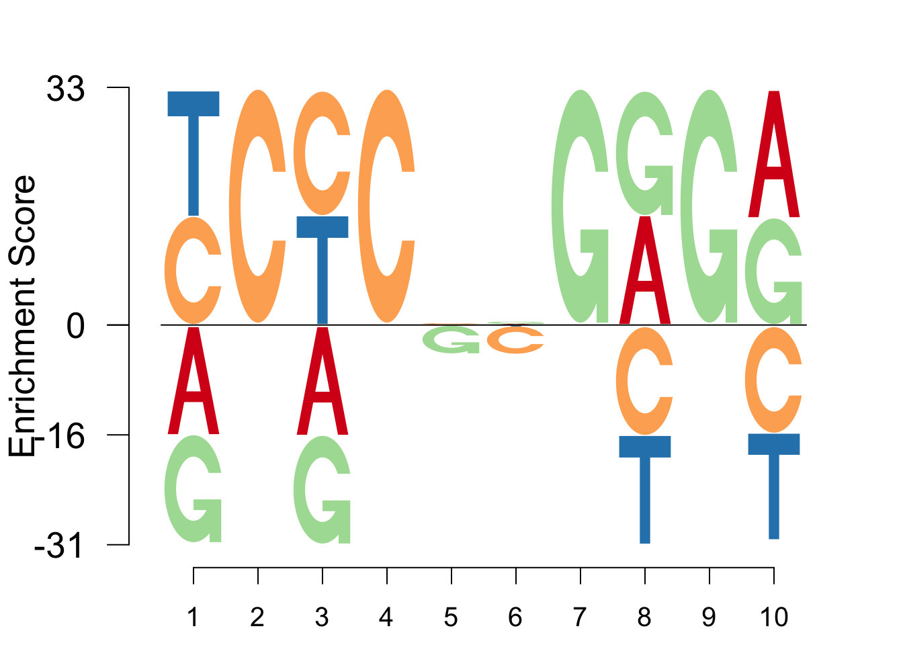
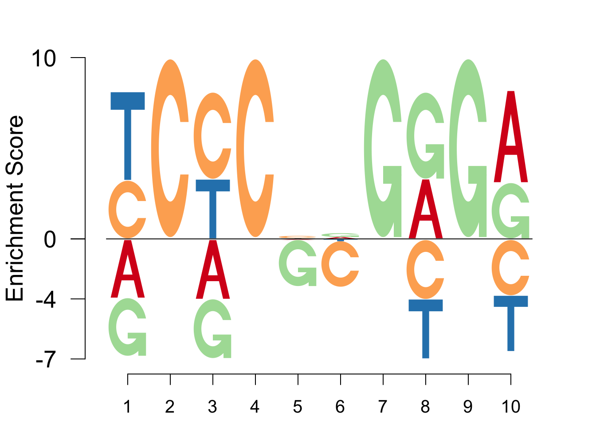
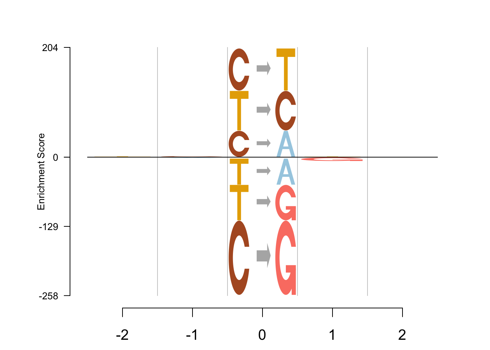
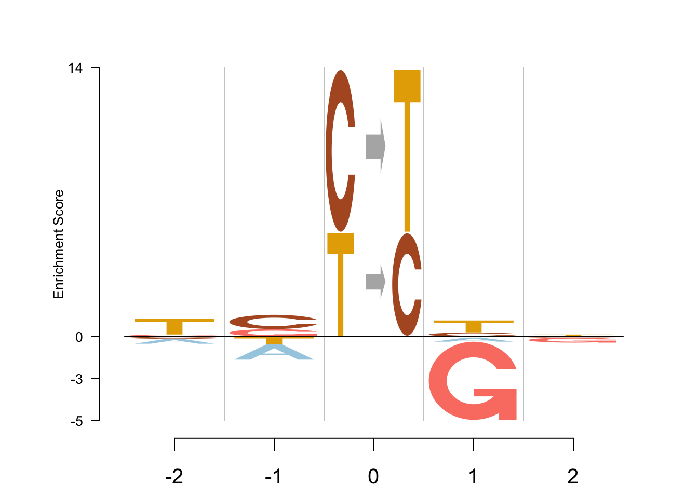
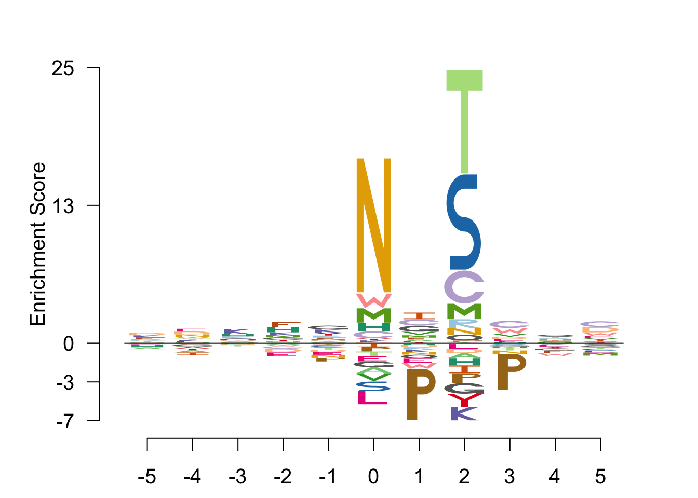
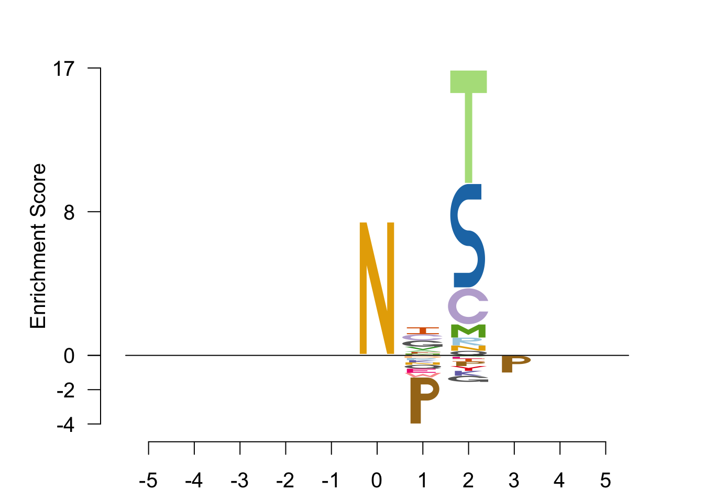

library(Logolas)
library(CVXR)data("EBF1_disc1")
EBF1_disc1## 1 2 3 4 5 6 7 8
## A 1.00000e-10 1e-10 1.00000e-10 1e-10 0.297935 0.336283 1e-10 1.76991e-01
## C 1.53392e-01 1e+00 8.25959e-01 1e+00 0.356932 0.020649 1e-10 1.00000e-10
## G 1.00000e-10 1e-10 1.00000e-10 1e-10 0.020649 0.374631 1e+00 8.23009e-01
## T 8.46608e-01 1e-10 1.74041e-01 1e-10 0.324484 0.268437 1e-10 1.00000e-10
## 9 10
## A 1e-10 8.84956e-01
## C 1e-10 1.00000e-10
## G 1e+00 1.15044e-01
## T 1e-10 1.00000e-10Logolas::logomaker(EBF1_disc1,
type = "EDLogo",
color_type = "per_row",
colors = RColorBrewer::brewer.pal(4,name ="Spectral"),
logo_control = list(score = "wKL",
y_fontsize=20,
control = list(quant = 0.5, gap_ylab=2.5,
epsilon = 0.01, round_off = 0,
posbins = 2, negbins = 3)))
Logolas::logomaker(EBF1_disc1,
type = "EDLogo",
color_type = "per_row",
colors = RColorBrewer::brewer.pal(4,name ="Spectral"),
logo_control = list(score = "preclog",
y_fontsize=20,
control = list(quant = 0.5, gap_ylab=2.5,
epsilon = 0.01, round_off = 0,
posbins = 2, negbins = 3)))
mat=read.table(paste('../data/Fig4_rawdata/sig_',12,'.txt',sep = ''))
mat1=cbind(t(mat[2:3,1:4]),rep(NA,4),t(mat[4:5,1:4]))
rownames(mat1)=c('A','C','G','T')
colnames(mat1) = c("-2", "-1", "0", "1", "2")
mat2=cbind(rep(NA,6),rep(NA,6),t(mat[1,]),rep(NA,6),rep(NA,6))
colnames(mat2) = c("-2", "-1", "0", "1", "2")
rownames(mat2) = c("C>A", "C>G", "C>T", "T>A", "T>C", "T>G")
table = rbind(mat1, mat2)
table## -2 -1 0 1 2
## A 0.1429512 0.08494982 NA 0.197080025 0.2767577
## C 0.1689498 0.46431232 NA 0.313653183 0.2454964
## G 0.2191480 0.31705404 NA 0.002281516 0.1927627
## T 0.4689511 0.13368382 NA 0.486985276 0.2849833
## C>A NA NA 7.590720e-10 NA NA
## C>G NA NA 3.232363e-67 NA NA
## C>T NA NA 9.657371e-01 NA NA
## T>A NA NA 1.141712e-39 NA NA
## T>C NA NA 3.426289e-02 NA NA
## T>G NA NA 5.617568e-45 NA NAcols = RColorBrewer::brewer.pal.info[RColorBrewer::brewer.pal.info$category ==
'qual',]
col_vector = unlist(mapply(RColorBrewer::brewer.pal, cols$maxcolors, rownames(cols)))
col_vector = col_vector[-c(4,5)]
total_chars = c("A", "B", "C", "D", "E", "F", "G", "H", "I", "J", "K", "L", "M", "N", "O",
"P", "Q", "R", "S", "T", "U", "V", "W", "X", "Y", "Z", "zero", "one", "two",
"three", "four", "five", "six", "seven", "eight", "nine", "dot", "comma",
"dash", "colon", "semicolon", "leftarrow", "rightarrow")
set.seed(20)Logolas::logomaker(table,
type = "EDLogo",
color_type = "per_symbol",
color_seed = 2000,
logo_control = list(score = "log",
y_fontsize=10,
control= list(quant=0.5,
gap_ylab = 2.5,
round_off=0,
posbins = 2,
negbins = 3)))
Logolas::logomaker(table,
type = "EDLogo",
color_type = "per_symbol",
color_seed = 2000,
logo_control = list(score = "preclog",
y_fontsize=10,
control= list(quant=0.5,
gap_ylab = 2.5,
round_off=0,
posbins = 2,
negbins = 3)))
data("N_Glycosyl_sequences")
sequences <- N_Glycosyl_sequences
bg <- apply(sequences, 1, function(x) return(median(x)))
bg <- bg/sum(bg)
sequences## -5 -4 -3 -2 -1 0 1 2 3 4 5
## A 312 311 348 365 385 0 402 2 366 348 355
## C 142 147 148 125 145 0 225 14 244 149 212
## D 266 272 225 177 196 0 201 1 268 234 320
## E 320 393 323 249 280 0 252 3 335 336 376
## F 266 226 231 330 267 0 268 2 260 203 229
## G 341 325 358 389 450 0 508 1 337 305 310
## H 119 137 156 188 136 0 133 0 147 149 130
## I 283 242 279 277 272 0 440 1 293 310 311
## K 237 228 283 243 257 0 179 0 206 205 204
## L 533 594 537 544 566 0 581 4 643 524 484
## M 93 94 92 105 100 0 109 2 87 97 73
## N 216 257 209 230 181 5422 187 3 181 225 225
## P 325 325 312 322 256 0 10 1 28 344 317
## Q 231 226 260 228 242 0 180 3 241 265 210
## R 260 234 267 224 274 0 206 4 242 260 229
## S 443 424 414 427 395 0 448 2365 432 434 388
## T 349 356 301 317 284 0 318 3012 277 369 287
## V 390 348 379 370 385 0 494 4 493 401 439
## W 91 101 96 82 97 0 62 0 135 75 110
## Y 205 182 204 230 254 0 219 0 207 189 213out <- Logolas::logomaker(sequences,
type = "EDLogo",
color_type = "per_row",
return_heights = TRUE,
bg = bg,
logo_control = list(score = "log",
ic = FALSE,
y_fontsize=15,
control= list(quant=0.5,
gap_ylab = 2.5,
round_off=0,
posbins = 3,
negbins = 3)))## frame width not provided, taken to be 1
## frame width not provided, taken to be 1
out <- Logolas::logomaker(sequences,
type = "EDLogo",
color_type = "per_row",
return_heights = TRUE,
bg = bg,
logo_control = list(score = "preclog",
ic = FALSE,
y_fontsize=15,
control= list(quant=0.5,
quant_strategy = "center",
gap_ylab = 2.5,
round_off=0,
posbins = 3,
negbins = 3)))## frame width not provided, taken to be 1
## frame width not provided, taken to be 1
This webpage has been developed using RStudio's R Markdown and John D Blischak's workflowr package.